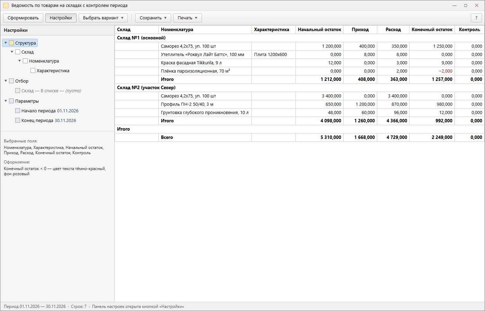

Демо-отчёт на СКД для технического собеседования
Ведомость по товарам на складах: начальный остаток, приход, расход, конечный остаток и контрольная колонка, которая обязана быть нулевой. Оформление — интерфейс 1С 8.3.10 «Такси», код — один выход из функции и тело в одну-две инструкции.
01Как это выглядит
Макеты интерфейса 8.3.10 «Такси»: плоские кнопки командной панели, серая шапка, тонкие рамки таблицы 1 px, жирные строки группировок и итогов, минусовой остаток — красным. Данные вымышленные: это макет, а не снимок живой базы.

Сформированный отчёт: группировки «Склад → Номенклатура → Характеристика», итоги по складам и общий.

Панель «Настройки»: структура группировок, отбор по складу, параметры периода.
02Что внутри
Запрос
Одно обращение к ОстаткиИОбороты вместо двух к Остатки, фильтр по нулевым строкам в ГДЕ, отборы — в настройках СКД, ни одного обращения через точку.
Схема
Четыре ресурса через Сумма(), вычисляемое поле Контроль, параметры периода, условное оформление отрицательного остатка.
Модуль
Ручная компоновка: КомпоновщикМакетаКомпоновкиДанных → ПроцессорКомпоновкиДанных → РезультатКомпоновкиДанных.Вывести(), подстановка текущего месяца.
Чекер стиля
PowerShell-скрипт проверяет один выход, длину тела функции, запрет Прервать, Продолжить, Перейти, Пока и Сообщить().
03Стиль кода
Один выход из функции, тело в одну-две инструкции, никаких Прервать, Продолжить, Перейти, Пока.
// Каждое обращение к платформе — отдельная однооператорная функция Функция ТекущиеНастройки() Возврат КомпоновщикНастроек.ПолучитьНастройки(); КонецФункции Функция ЗначениеПоУмолчанию(ТекущееЗначение, Значение) Возврат ?(ЗначениеЗаполнено(ТекущееЗначение), ТекущееЗначение, Значение); КонецФункции
| Правило | Как проверяется |
|---|---|
Ровно один Возврат, и только последней инструкцией | подсчёт инструкций в теле функции |
В процедурах Возврат запрещён | разбор вида рутины |
| Тело функции 1–2 инструкции | предупреждение после 2, ошибка после 4 |
Запрещены Прервать, Продолжить, Перейти, Пока | поиск по целым словам |
Отступ — табуляцией, Сообщить() — нельзя | регулярные выражения |
Текущий прогон: 2 файла, 0 ошибок, 0 предупреждений.
04Сборка
Файл → Новый → Внешний отчёт, открыть схему компоновки данных.- Вставить запрос из
src/Запрос.txtв набор данных. - Добавить ресурсы
Сумма(), вычисляемое полеКонтроль, параметры периода. - Настроить структуру
Склад → Номенклатура → Характеристикаи условное оформление. - Вставить модуль объекта из
src/МодульОбъекта.bsl, сохранить.erf, сформировать.